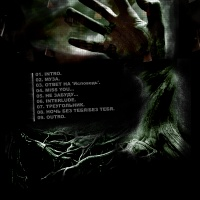

Изображение к стиху "Ответ на 'Исповедь'"
(создал: Николай 'Nikolas' Руденко - 24.05.04)
(редактор: finn) (c)
::
» Не страдай и не плачь, я молю
не ищи идеал - его нет. (.03)
» Пробежала вдоль грифа - притихла,
словно хочет что-то сказать.
Задрожала и пропела мне тихо... (.08)

/back cover/
|